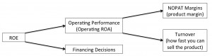

Home Depot Valuation in 2000 (BAV, Monday, Week 8)
business-analysis-and-valuationyear-twoDecomposing ROE:

{kind=link}
Home Depot current performance (2000) versus past:
-- More stores (scale/efficiency gains), higher revenue per square foot, higher revenue per transaction (customer loyalty?)
-- Higher NOPAT margins, but lower asset turnover => shift from leasing stores to ownership; "clustering" strategy in store expansion
-- Favorable macro environment
Growth plans:
-- "Design" stores => higher margin BUT lower turnover? more sensitive to business cycle? saturated market?
-- International geographic expansion => higher cost?
-- Internet/in-store pickup => lower COGS BUT less customer service (Home Depot value proposition)
-- Expansion to professionals and Buy-It-Yourself => huge markets, big transactions BUT more cyclical?
Key questions (hard to answer):
What is terminal sales growth?
What is correct market risk premium (in hindsight; this was mid-2000)?
What will long-term NOPAT margins be?
- Next: Rwanda (MOC, Monday, Week 8)
- Previous: eHarmony (CSN, Tuesday, Week 8)